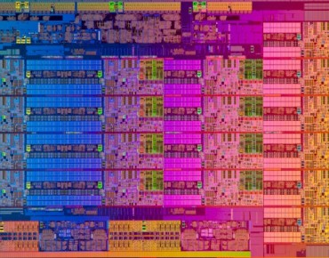

test:
lea rdx, [rdi+4+rax*4] ; rdx points at the end
xor eax, eax ; accum = 0
.loop
add eax, [rdi] ; add next value
add rdi, 4 ; move pointer along
cmp rdi, rdx ; reached end?
bne loop ; no, keep going
ret ; yay we're done
mov eax, 1 ; eax = 1
add [rdi+16], 1 ; tmp = rdi + 16
; tmp2 = read(tmp)
; tmp2++
; write(tmp, tmp2)
mov eax, [rdi]
add eax, ebx
mov [rdi], eax
mov edx, [rsi]
add edx, ebx
mov [rsi], edx
mov eax, [rdi] ; eax0 = [rdi]
xor edx, edx ; edx0 = 0
div esi ; eax1 = eax0 / esi
mov [rdi], eax ; [rdi] = eax1
mov eax, [rdi + 4] ; eax2 = [rdi + 4]
div esi ; eax3 = eax2 / esi
mov [rdi + 4], eax ; [rdi + 4] = eax3